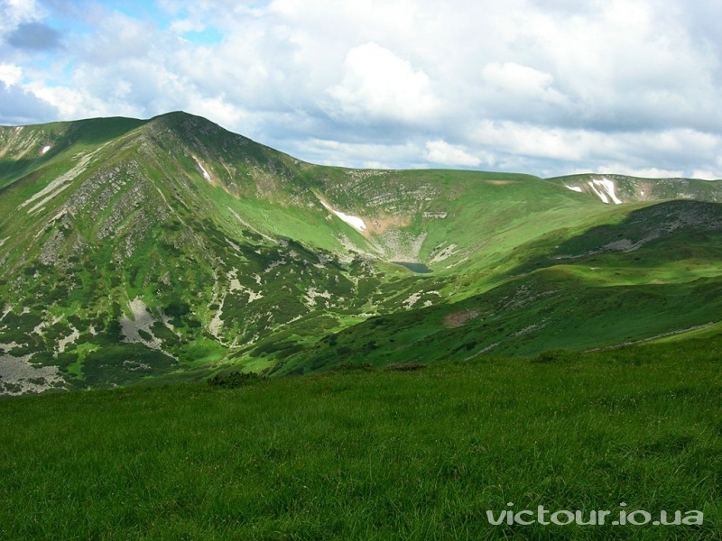

Якщо ваш життєвий шлях привів на прикарпаття, то можу вам порадити подорож Українськими Карпатами. Даний гірський масив містить безліч туристичних місць, таких як м.Яремча, географічний центр Європи в с.Ділове, гірськолижний курорт Буковель і т.п., а також неймовірні гірські краєвиди та красивих водоспадів.
Українські Карпати — частина гірської системи Східних Карпат (які поділяються на Зовнішні Східні Карпати та Внутрішні Східні Карпати) на Заході України.
Їхня довжина від верхів'їв Сяну до витоків Сучави становить 280 км, ширина понад 110 км. Займають територію Закарпатської, Львівської, Івано-Франківської та Чернівецької областей. Загальна площа гірської системи — понад 24 тис. км². Гірські хребти, розділені поздовжніми улоговинами та розмежовані глибокими поперечними долинами, простягаються, переважно, з північного заходу на південний схід. В карпатах знаходяться найвищі точки Україн:
г.Гутин-Томнатик 2018м.
